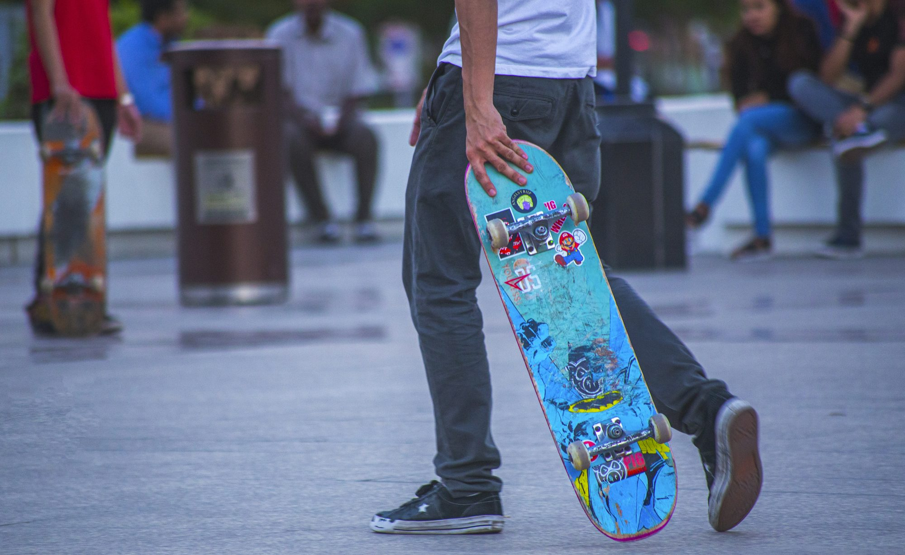

Exploring Skateboarding Styles: A Comprehensive Guide
An in-depth look at the various styles of skateboarding, the skills they require, and the community that supports this dynamic sport.
At the forefront of skateboarding culture is street skating, a discipline that transforms urban environments into a playground for creativity and skill. Skaters use everything from curbs and benches to stairs and handrails, adapting their tricks to the features of the urban landscape. Street skating emphasizes technical abilities, with fundamental tricks like the ollie, kickflip, and grind serving as building blocks for more complex maneuvers. This style encourages innovation and personal expression, as riders find ways to utilize their surroundings in unique ways. The urban setting becomes a canvas for artistic interpretation, inviting skaters to showcase their individuality and style.
The community surrounding street skating is one of its most enriching aspects. Skaters frequently gather in popular spots, sharing tips, filming tricks, and supporting one another. This collaborative spirit fosters an environment where riders can thrive, continuously pushing each other to improve. Videos captured during these sessions not only document individual progress but also highlight the camaraderie that defines street skating culture. This sense of belonging is what makes street skating not just a sport, but a lifestyle shared among passionate individuals.
In contrast to the urban landscape of street skating, vert skating is characterized by high-flying aerial maneuvers performed in specially designed ramps or halfpipes. This discipline focuses on harnessing speed and height, allowing skaters to launch off vertical walls and execute spins, flips, and grabs. The thrill of soaring through the air adds an exhilarating dimension to vert skating, captivating both participants and spectators. Competitions in vert skating are electrifying events, showcasing the technical prowess and creative flair of the riders. The atmosphere at these events is charged with energy, as skaters and fans come together to celebrate the artistry of the sport.
Bowl and pool skating present another exhilarating facet of skateboarding. In these disciplines, skaters navigate large, bowl-shaped structures or emptied swimming pools, emphasizing fluid movements and smooth transitions. The experience of riding in a bowl allows for unique expressions of style, as skaters carve through the curves and find their rhythm. This style encourages a communal spirit, as riders often share the space, motivating one another to take risks and explore new tricks. The joy of bowl skating fosters a sense of collaboration, making it a welcoming environment where creativity thrives.
Freestyle skateboarding, while less mainstream, plays a crucial role in the evolution of the sport. This discipline involves flatland tricks and intricate footwork, requiring a high level of balance and technical skill. Freestyle skaters perform a variety of maneuvers on smooth surfaces, showcasing their creativity and precision. Unlike other styles, freestyle invites riders to develop their own unique combinations, with moves such as the casper slide and the 360 shove-it highlighting individual flair. This focus on personal expression makes freestyle skateboarding an essential part of the broader skateboarding culture.
Longboarding has emerged as a popular subculture within the skateboarding community, attracting riders who appreciate a more relaxed and fluid experience. Longboards, designed for stability and comfort, allow riders to cruise, carve, and tackle hills with ease. This style promotes a sense of freedom, enabling individuals to connect with their surroundings and enjoy the ride. Longboarding fosters a laid-back atmosphere, inviting skaters to appreciate the beauty of movement while exploring their environment.
The thrill of downhill longboarding offers an exhilarating rush for those seeking speed and adventure. Riders navigate steep hills, experiencing the adrenaline of high-velocity descents while maintaining control. This discipline requires a keen understanding of balance and technique, as skaters maneuver through sharp turns and varying terrains. Slalom longboarding adds another layer of excitement, where riders weave through a series of cones, showcasing their precision and agility. Both downhill and slalom longboarding emphasize skill and control, providing an exhilarating experience for participants.
Park skateboarding brings together elements from various disciplines, utilizing features such as ramps, rails, and bowls found in skateparks. These parks serve as community hubs where skaters of all ages gather to learn, share ideas, and support one another. The atmosphere within skateparks is often lively and inspiring, promoting collaboration and creativity. Riders can experiment with different tricks and styles, contributing to a dynamic culture that continually evolves. Skateparks foster a sense of belonging, encouraging skaters to push their limits and celebrate each other's achievements.
For those who seek adventure beyond traditional skateboarding, off-road or all-terrain skateboarding offers a thrilling alternative. This style utilizes specialized boards with larger tires, enabling riders to tackle rough terrains such as dirt trails and grassy hills. Off-road skating combines the excitement of skateboarding with the beauty of nature, allowing individuals to embrace the outdoors while honing their skills. The challenges of varying terrains encourage adaptability and resilience among riders, fostering a deep connection to the environment.
Crossover styles within skateboarding reflect the spirit of innovation and experimentation that defines the culture. These styles blend techniques from different disciplines, allowing riders to create dynamic performances that challenge conventional norms. This fusion of styles enriches the overall skateboarding experience, encouraging skaters to push their boundaries and explore new possibilities. The ongoing evolution of skateboarding is a testament to the creativity and diversity that permeates this vibrant culture.
In conclusion, skateboarding is a multifaceted sport that invites individuals to express themselves while honing their skills. Whether you are a newcomer eager to learn or an experienced rider looking to refine your craft, there is a style of skateboarding that resonates with your journey. The culture surrounding skateboarding fosters connections among individuals, inspiring them to embrace their love for the sport and the bonds formed along the way. As skateboarding continues to grow and evolve, it remains a celebration of creativity, community, and the exhilarating joy of riding.